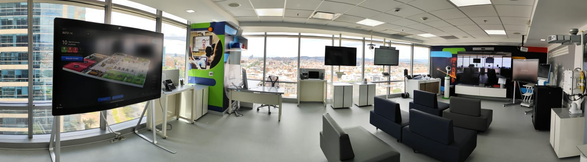
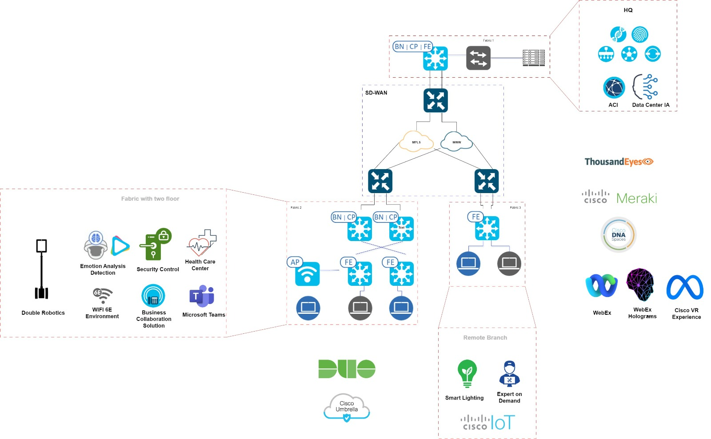
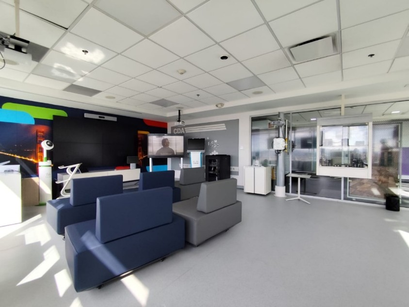
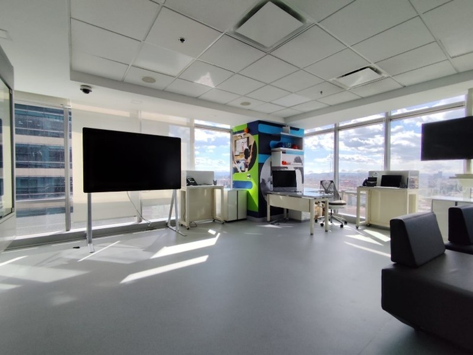
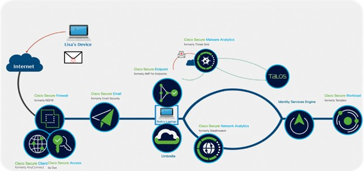
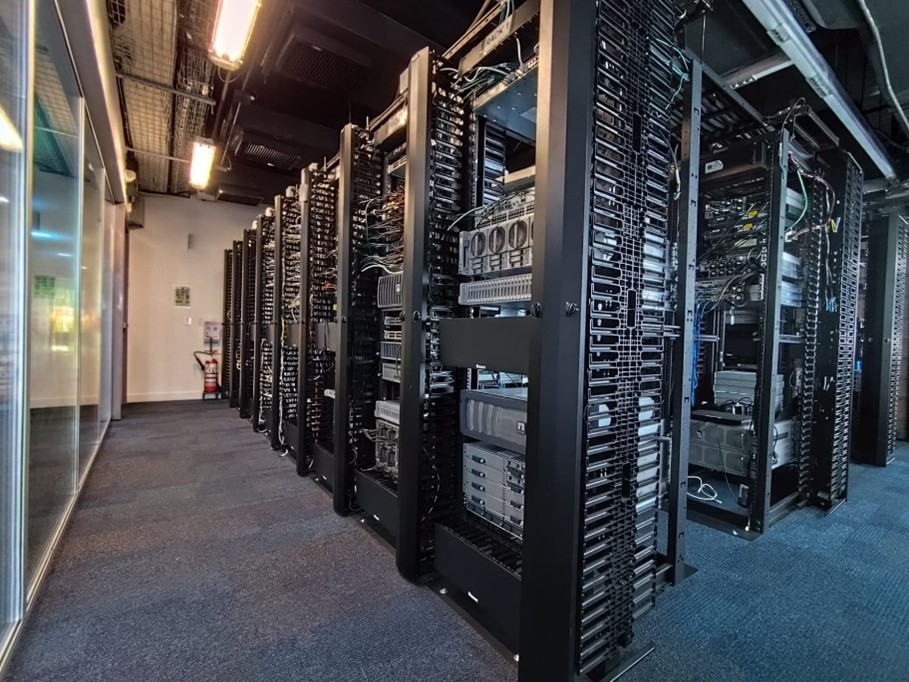

ExC (Experience Center)
Transforma tus ideas en realidad con experiencias de vanguardia

En el Cisco Experience Center, te invitamos a sumergirte en el futuro de la tecnología. Nuestro compromiso es compartir contigo la visión innovadora de Cisco, ayudándote a descubrir cómo nuestras soluciones pueden impulsar tu éxito. Explora nuestras demostraciones interactivas y vive en primera persona cómo las tecnologías de Cisco están transformando la forma de conectar, colaborar y crecer. Consulta todas las experiencias disponibles en el CXC y descubre cómo podemos personalizar tu sesión informativa para llevar tus proyectos al siguiente nivel.


×

Future Work Place
Ofrecemos demostraciones en vivo desde nuestras áreas dedicadas a la colaboración, donde mostramos la Suite Webex y los Dispositivos. Nuestros ingenieros especializados en demostraciones destacarán las ventajas de la plataforma Webex, los dispositivos Cisco y el Control Hub, así como otras integraciones clave (Meraki, Cisco Spaces, Thousand Eyes) para habilitar espacios de trabajo híbridos, sostenibles e inteligentes.
- Demostraciones en vivo definidas por casos de uso de la aplicación Webex y Puntos de Video (incluido MTR).
- Enfoque de plataforma abierta de Cisco: interoperabilidad con Microsoft (O365, MS Teams, CVI, Zoom, Google, etc.).
- Demostraciones de Webex Calling, Contact Center AI y Cinematic Meetings
- Gestión centralizada en la nube con Control Hub.
- Integraciones con Cisco Spaces para mejorar la experiencia en la oficina.
- Integraciones con Meraki y Thousand Eyes para un monitoreo mejorado de la experiencia del usuario.
- Reuniones espaciales con Holo2 de Microsoft integradas con Webex (Holograms).
Dispositivos
- Desk Cameras
- PTZ4K Camera
- Desk Series
- Board Pro Series
- Room Series
- Room Panorama
- Room Navigator (incl. room booking)
- 3rd party integraciones como Appspace, UMA, Jibb, Moderro, Realwear, Holo
- Integracion con aplicaciones Web, como Microsoft Whiteboard, Miro, y más…

Digital Resiliency: Redes seguras de extremo a extremo
Destacamos el viaje del usuario y el viaje de TI para centrarnos en casos de uso clave, como Zero Trust (Confianza Cero), segmentación de redes y políticas, SASE y XDR. El objetivo de esta sesión es mostrar la arquitectura integral de Cisco como una plataforma de red segura e integrada de extremo a extremo.
Utilizando un gráfico de línea de tiempo y una demostración personalizada, mostramos cómo un ataque puede recorrer una red empresarial y cómo el enfoque de Zero Trust de Cisco y su portafolio de seguridad de extremo a extremo trabajan de manera cohesiva, respaldados por la inteligencia de amenazas más reciente de Talos y XDR, para ofrecer un modelo de defensa profundo que combata amenazas nuevas y emergentes.

Demostraciones
- Microsegmentation SDAccess
- NAC Posture
- TCN (Threat Cointaned NAC)
- Secure Network Access + DUO (Cautive Portal)
- XDR
- EDR (Secure Endpoint)
Múltiples Centros de Datos y Preparados para IA
Descubre cómo las soluciones de Cisco están redefiniendo la infraestructura moderna para superar los desafíos más exigentes del mercado actual. Imagina gestionar bases de datos como nunca antes, con una eficiencia incomparable, o desplegar aplicaciones de manera instantánea mediante infraestructura de escritorio virtual, sin interrupciones para los usuarios. Adéntrate en el futuro con redes optimizadas para IA y Machine Learning, que ofrecen un rendimiento, flexibilidad y eficiencia sin precedentes. Además, exploramos cómo nuestra infraestructura transforma las operaciones de TI, simplificando cargas de trabajo genéricas y llevando el rendimiento de Big Data a niveles extraordinarios. Estas demostraciones no solo muestran tecnología, sino el futuro de los centros de datos: ágiles, escalables y totalmente preparados para liderar la innovación.
¡Únete y sé parte de esta revolución tecnológica!
Demostraciones disponibles en dCloud:
- Bases de Datos (SAP HANA, SQL, etc.): muchos clientes ejecutan bases de datos SAP HANA.
- VDI (Virtual Desk Infraestructure): implemente y escale rápidamente nuevas aplicaciones o sistemas operativos de escritorio actualizados, sin interrupciones para los usuarios.
- IA/ML: nuestras redes para IA ofrecen una programabilidad, rendimiento, flexibilidad y eficiencia inigualables, todo a través de Ethernet.
- Cargas de Trabajo Genéricas: adopte una infraestructura de computación moderna y adaptable, diseñada para simplificar las TI e innovar al ritmo del software.
- Big Data: obtenga un rendimiento excepcional, escalabilidad y disponibilidad para aplicaciones exigentes.

Experiencias de Realidad Virtual (VR)
Esta es una experiencia presencial, ofrecida en sitios específicos de CXC, que utiliza visores de realidad virtual para crear una experiencia de demostración inmersiva. Lleve a su cliente a un recorrido de realidad virtual con soluciones de Cisco basadas en sectores verticales. Puede ser guiado o autoguiado con audio y texto. Una experiencia sencilla y sin necesidad de conocimientos previos en VR. Únase a nosotros mientras mostramos nuestros casos de uso de trabajo híbrido en un entorno virtual para ayudar a los clientes a experimentar cómo pueden beneficiarse de la tecnología y la metodología de diseño de Cisco. Discutiremos nuestro camino hacia la sostenibilidad con edificios inteligentes y conectados, y cómo hemos evolucionado para diseñar centros de colaboración enfocados en el trabajo híbrido.
Experiencias Verticales Disponibles
- Experiencia de Edificio Inteligente (Penn1)
- Experiencia de Edificio Inteligente (ATL)
- Experiencia Universitaria
- Experiencia en Salud
- Experiencia en Retail (Supermercado/Farmacia)
- Experiencia en Manufactura (Farmacéutica)
- Sostenibilidad